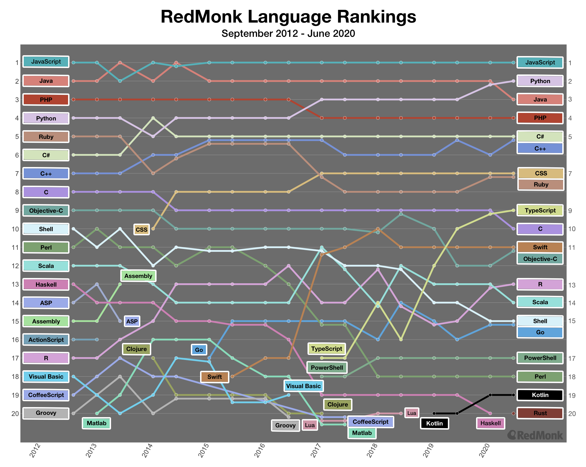

A lista de junho da Redmonk, que ranqueia a popularidade das principais linguagens de programação, revelou uma novidade bombástica: pela primeira vez, desde 2012, a linguagem Java não figurou entre as duas primeiras posições do ranking. A linguagem de programação mais popular continuou sendo a JavaScript, mas a segunda colocação passou a ser ocupada pela Python.
A disputa entre Python e Java estava acirrada nos últimos meses. Ambas estavam empatadas nas divulgações anteriores do ranking, mas um dos motivos que pode explicar a queda da Java é a atenção dos programadores voltada para outras linguagens, segundo Stephen O’Grady, analista da RedMonk.
Realizado pela Redmonk, o ranking de popularidade das linguagens de programação tem como base o cruzamento de dados da plataforma GitHub e as discussões no site Stack Overflow.
Confira abaixo as 20 linguagens mais “queridas” pelos programadores no mês de junho:
1. JavaScript
2. Python
3. Java
4. PHP
5. C++
6. C#
7. Ruby
8. CSS
9. TypeScript
10. C
11. Swift
12. Objective-C
13. R
14. Scala
15. Go
16. Shell
17. PowerShell
18. Perl
19. Kotlin
20. Rust
Outra novidade foi a entrada da Rust na lista. A linguagem criada pela Mozilla tem sido utilizada em plataformas da Apple, Amazon, Google e Microsoft, e aponta um crescimento expressivo: em cinco anos, ela pulou da 48ª posição para a 20ª.
A Kotlin também não fica atrás. Em 2015, a linguagem estava apenas no 68º lugar, mas atualmente, é a 19ª linguagem de programação mais popular, segundo a Redmonk.
Gráfico exibe troca de posições ao longo dos anos entre as linguagens de programação mais populares. Foto: Divulgação/Redmonk
Apesar de se manter na 13ª colocação, a R ganhou destaque sendo utilizada por universidades e indústrias do setor de saúde na corrida para encontrar a vacina contra a Covid-19
O destaque final vai para o TypeScript, que incorpora elementos do JavaScript em sua composição. O’Grady questiona se a linguagem tem potencial para pressionar as cinco primeiras colocadas ou se vai permanecer entre as últimas do top 10. Só o tempo dirá.
Via:ZDNet